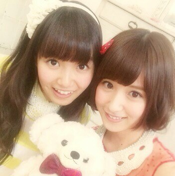
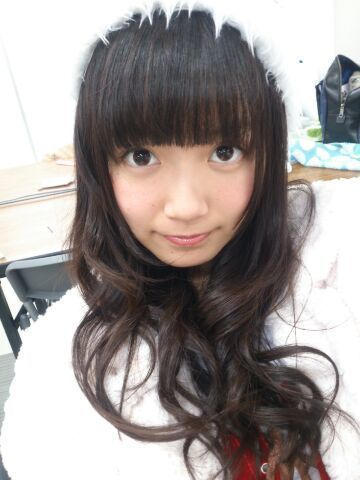
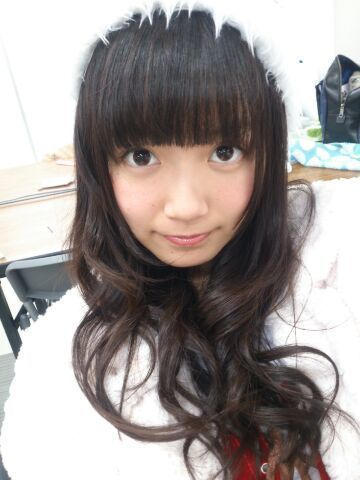
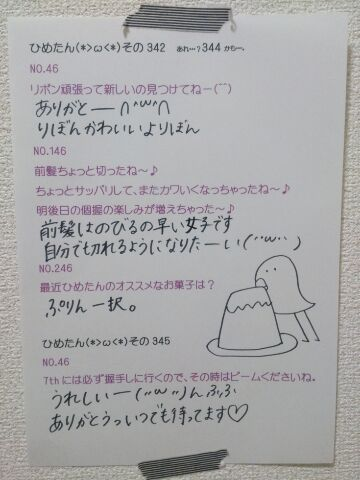

| 2013/12 18 Wed | ひめたん(*>ω<*)そ の382 |

最新号の月刊ヤンマガさんの写め。
楽しそうでしょー♪♪
クリスマスパーティーしたんだよー
スイーツいっぱいで
みんなテンション高いです
真夏 (秋元真夏ちゃん)はマカロン大好きだもんね！
コメントいつもありがとうございます！
ひめたんサンタさんが
好評でよかったー(＊´ω`＊)
サンタさんは１年に１回だけど
また来年も違うサンタさん着ようかなー
ちなみに去年はツリーになったよ☆
乃木どこの感想もありがとうっ
あの収録は結構がちで苦しかった(´；；｀)
ミートボールは
ひめたんがちっちゃい頃に
おむすびの具によく忍ばせて作ってもらってたの
確かに美味しいんだけど
いっぱい食べるには向いてないんだよねー
みさ先輩 (衛藤美彩ちゃん)のとり天を
ちょっともらったんだけど
え！めっちゃ美味しかったよー！
それからみなさんのおすすめも
教えてくれてありがとーうっ
みなさんのおすすめを毎日試してたら
１年間はおかずに困らないねー
いっそ本でも出したらどうかな！
みなさんもほかのひめきゅんさんのコメント読んで
気になったのあったらやってみよ∩( ^ω^ )∩

サンタ帽をかぶった写めだと言ったら
何人が信じてくれるんだろう。
最新号の月刊ヤンマガさんの写め。
楽しそうでしょー♪♪
クリスマスパーティーしたんだよー
スイーツいっぱいで
みんなテンション高いです
真夏 (秋元真夏ちゃん)はマカロン大好きだもんね！
コメントいつもありがとうございます！
ひめたんサンタさんが
好評でよかったー(＊´ω`＊)
サンタさんは１年に１回だけど
また来年も違うサンタさん着ようかなー
ちなみに去年はツリーになったよ☆
乃木どこの感想もありがとうっ
あの収録は結構がちで苦しかった(´；；｀)
ミートボールは
ひめたんがちっちゃい頃に
おむすびの具によく忍ばせて作ってもらってたの
確かに美味しいんだけど
いっぱい食べるには向いてないんだよねー
みさ先輩 (衛藤美彩ちゃん)のとり天を
ちょっともらったんだけど
え！めっちゃ美味しかったよー！
それからみなさんのおすすめも
教えてくれてありがとーうっ
みなさんのおすすめを毎日試してたら
１年間はおかずに困らないねー
いっそ本でも出したらどうかな！
みなさんもほかのひめきゅんさんのコメント読んで
気になったのあったらやってみよ∩( ^ω^ )∩

サンタ帽をかぶった写めだと言ったら
何人が信じてくれるんだろう。

 ひめたんがサンタクロースにお願いしたことで、
ひめたんがサンタクロースにお願いしたことで、
何かエピソードある？
人生でいっちばん最初に頼んだのは
かえるさんの傘でした。
いま思うとそんなに欲しかったのかな(´・ω・｀)
あっいやかえるさんの傘の悪口ではないよ？
でも結構お気に入りだった気がする
 ちなみにひめたなりの
ちなみにひめたなりの
風邪対策とかってあるのかなー？
病は気からっていうので
ほんとに大事な本番が近い日は
自己暗示をかけます
ひめたんは強い子！風邪なんか引かん！って◎
ひめたんはエクレアとシュークリーム
どっちがすきですか？
にゃーかわいらしい質問きたっ＊＊
えっと、どっちもすきだけど
どっちかと言われたらシュークリームすきです///
プリンもすきだよー
ひめたん、くるみパンは好きですか？★゛
最近すきだよー♪
やさしい味がするよねっ(＊^ω^＊)
くわい？くわいってなーに？
くわいってのは根菜？なんかな
広島の名産品です
おいもみたいな食感がします！
握手会で今まで
ペアを組んだことないメンバー中で、
ひめたんがペアを組みたいメンバーは誰ですか？？
また、二期生だったら誰と組んでみたいですか？？
いくちゃん (生田絵梨花ちゃん)
るんるん (斎藤ちはるちゃん)と
ぜひ中３組レーンやってみたい！絶対楽しい！
２期生なら みりりん (渡辺みり愛ちゃん)と
姉妹ちゃんレーンがいいな＊
ひめたんのバレッタ、月の大きさ、
そんなばかな、やさしさとはで
好きな歌詞の部分ってどこ？
やさしさとは の２サビです！
やさしさとは
何なんだろう?
君を慰めることか
あるいは涙の理由(わけ)を
何も聞かないことか
ひめたんのブログの
コメント欄下２ケタに46を踏んだ方へ
手書きでコメ返するコーナー
＼ ひめたん46 ／

今日は新堂本兄弟の収録に
参加させていただきました！
オンエアぜひチェックしてみてねーっ
(＊´・ω・＊)
コメント(447)
2013/12/18 00:06